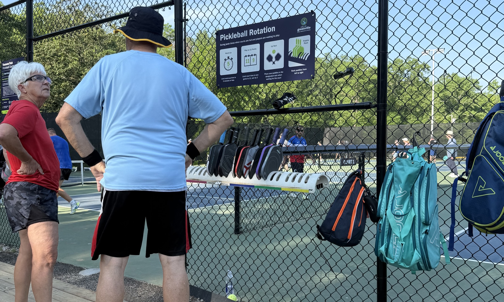

About Open Play Map
Find open play pickleball. Meet the people. Get the Scoop.
Open Play Map helps players find real places across the country where they can show up, jump into pickup games, and make friends through pickleball.
The mission
Pickup pickleball should be easier to find.
The beauty of pickleball is that you can roll into almost any city in the country and find a court where people are playing. A good open play session can turn a random park into a community.
Open Play Map exists to make that easier. The goal is not just to list courts. The goal is to help players understand where open play actually happens, when to go, what level to expect, and whether the vibe is social, competitive, beginner-friendly, or a little bit of everything.
1
Find a court
Search by city, state, park, access, day, time, or skill level.
2
Check the Scoop
Review notes, photos, open-play hours, and player updates.
3
Show up and play
Meet new people, get games in, and help the next player.
Scoop Pickleball rewards
Help the map grow and earn entries into monthly paddle drawings.
Scoop Pickleball rewards players who contribute useful information. Each active credit is an entry into a monthly random drawing, and the winner gets a free Scoop paddle. Active credits keep stacking month to month unless you win.
Submit a location
Add a real open-play spot with helpful location, schedule, and court details.
Add a review
Share what you saw: crowd level, skill level, best time to go, fees, nets, or recent changes.
Add a photo
Show players what the courts, nets, lines, parking, or setup look like before they go.
3
new location submissions per day
10
reviews per day
Credits reward quality contributions, not spam. Submissions may be reviewed before they appear publicly on the map.
Monthly paddle drawing
At the end of each month, active credits are drawn at random. The winning entry gets a free Scoop Pickleball paddle, and that winner's active credits reset after the drawing.
Your live drawing entries
Active credits are your current drawing entries. They keep stacking as you contribute and carry forward unless you win a monthly drawing.
Your all-time impact
Lifetime credits track everything you have contributed over time. They stay the same even when active credits reset, and high lifetime earners may unlock more rewards in the future.
Rewards are in beta and subject to official terms before public launch. Credits have no cash value, are not transferable, and do not guarantee a prize. No purchase necessary. Eligibility, prize details, odds, winner confirmation, and drawing timing will be finalized before any prize is awarded.
Community rules
Keep the map accurate, useful, and player-first.
Submit real open play
Add locations where players can reasonably expect to find pickup games, not just any court with lines.
Share the useful stuff
Days, times, skill levels, access, fees, nets, lighting, bathrooms, parking, and beginner friendliness all help.
Be honest and respectful
Reviews should help other players decide where to play. Keep it accurate, fair, and focused on the court experience.
Only share approved photos
Use photos you took or have permission to share. No spam, fake locations, duplicate entries, or misleading updates.
Why it matters
A good open play session can make a new place feel familiar.
Pickleball is one of the easiest ways to meet people, stay active, and feel connected in a new city. Open Play Map helps players find the courts where those games and friendships are already waiting.